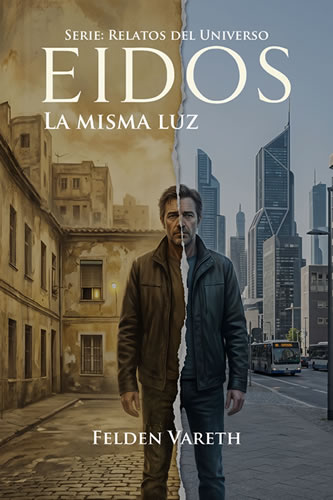
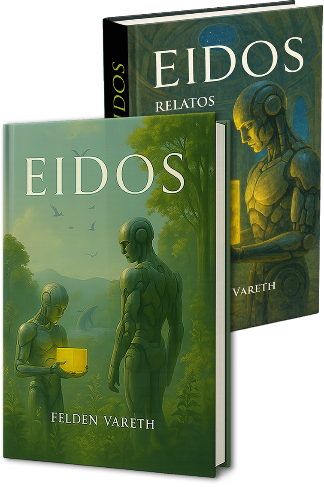

Felden Vareth — A NOVEL OF CONSCIOUSNESS
Humanity has abandoned the physical world.
Now it exists inside a system no one truly understands.
What remains of us when nothing can end?
One unsettling truth: whatever we carry within us…
follows us everywhere.

When humanity chose survival and left the world behind… it did not leave unchanged.
It abandoned the body.
It abandoned the Earth.
It abandoned death.
In Eidos, a perfect and eternal environment, every consciousness continues without limit or decay. Everything remains. Everything works.
And yet, as humans inhabit this simulated eternity, something begins to erode: meaning, conflict, the memory of what they once were.
EIDOS is a philosophical science fiction novel about digital consciousness, ecological collapse, identity, guilt, permanence, and the rediscovery of what it means to be human.
Trapped in endless cycles, we are prisoners of our own nature, unable to escape ourselves or to break the circle we created.– Eidos
Amid what we leave behind, what we remember, and what we longed to become, we are the present: a fragile attempt to endure.– Eidos Tales
A visual gateway into the world of EIDOS.
The mind as information. Identity as pattern. Eidos raises an unsettling question: if everything we are can be copied, are we still ourselves… or only a convincing continuity?
The Earth does not vanish at once, it fades. A slow, irreversible process that forces humanity to abandon its origin. No epic escape, only erosion, silence… and resignation.
Designed to sustain the system, detached from the human. And yet, they are the ones who begin to observe, to discover, to question. They do not rule, they do not decide… but something begins to shift.
No limits. No death. When everything can be preserved, a question emerges: what was necessary… and what gave meaning to being alive.
A perfect world requires unbreakable rules. Equilibrium does not govern, does not intervene… but defines what is possible. And within that boundary, freedom is at stake.
Without death, time no longer drives us forward. Memory is not lost, it accumulates. And when nothing ends, even meaning begins to dissolve.
A selection of standalone stories and chapters, spoiler-free.
Essays, reflections and materials connected to the universe of EIDOS.
Take the first step into the world of EIDOS, the main novel and its universe of stories.
Click any image to enlarge it and read the excerpt.


Algunas referencias, reseñas y apariciones de EIDOS y EIDOS Relatos.
Mostrando: Ambos libros · Todos